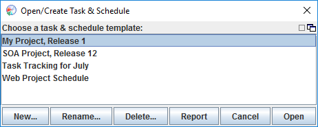
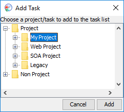

The task and schedule tool allows you to generate a schedule for completing tasks, and track progress against that schedule using earned value. You can open the task and schedule tool by selecting the "Task & Schedule" option on the configuration menu.
For more guidance in creating an earned value schedule, see the Creating a schedule step by step help topic.
If you haven't created any schedules, the dashboard will immediately jump to the Create New Schedule dialog which will allow you to create one. If you have already created at least one schedule, a Task & Schedule chooser window will appear.

This window displays all the schedules you have created. After you click on a schedule to highlight it, you can use the buttons along the bottom to rename it, delete it, or open it for editing. The Report button will show you the detailed status for the schedule in your web browser.
Clicking the New button will create a new schedule. The dashboard will ask you to enter a name for the new schedule. This allows you to track different schedules from within the dashboard; each schedule must have a unique name.
In addition to choosing a schedule name, you can indicate whether you want to create a regular schedule or an EV roll-up.
When a new schedule is first created, an empty Task & Schedule window will appear prompting you for the first task you want to add to the schedule.

All the tasks that are to be tracked within the schedule must come from the project hierarchy defined using the Hierarchy Editor or the Work Breakdown Structure Editor. You can track progress against PSP projects, projects you have made using custom process scripts or add-on process sets, or even against just a hierarchy of task names that are not associated with a particular process in the dashboard. The Task & Schedule tool is completely process independent.
The Task & Schedule window combines a project task list and a simple project schedule into one window. The top portion of the window gives a view of the task schedule on a task by task basis and tracks metrics about each task. The bottom portion of the window is concerned with actual calendar time. The time for the schedule is broken out into time periods (e.g. weeks) and the columns track metrics about each time period.

Editable values appear with a yellow background. If you are unfamiliar with the various columns in the task and schedule planning templates, you can hover the pointer over the column headings and a tool tip will tell you what the abbreviated heading stands for.
If you edit the schedule or the list of tasks, you will need to click the Save button to save your changes. If you edit yellow-background values in the task list, however, those changes will be saved transparently; pressing the save button is not necessary.
While this help topic won't get into all the details of earned value tracking, briefly here are the items that are shown in the upper window. (Note: you can customize the columns that are displayed by choosing "Select Task Columns" from the "View" menu.)
Planned Time (PT): This is the amount of time you have planned for the given task. Generally this will be displayed in hours and minutes. However, if this field is editable, you can enter a percentage instead of a duration to mark this task as a "level of effort" task.
Time This is the actual amount of time spent on a given task.
Planned Value (PV): This is the amount of earned value that will be earned by the given task based on the planned numbers. It is calculated as a percentage of the total planned work.
Plan Date: This is the date the task is planned to complete. The Task & Schedule tool computes this by assuming that the planned time for each task, the planned task order, and the planned hours per time period will be 100% accurate. Then, it determines when your schedule will have enough planned hours to complete the first task, the second task, and so on. (For more details on this calculation, click here.)
Replan: No plan is perfect. When things don't go according to plan, it is helpful to chart a new course ahead based on the most up-to-date information. The dashboard looks at the tasks you've completed so far, the time you've spent on tasks in progress, and the time you have available in your schedule. Then, it recalculates planned dates for each task by assuming assumes that your plan was essentially correct, but has encountered a few "bumps" in the road.
As an oversimplification, you can think of this as calculating how far ahead or behind schedule you are, and adding that delta to the planned date for each task. In reality, the calculation is more intelligent, because it accounts for in-progress work, overspent tasks, and variations in the amount of time your schedule contains per period. (For more details on this calculation, click here.)
Forecast: This is the date that the Task & Schedule tool thinks you might actually finish the given task. After you have completed at least one task in your plan and at least one time period in your schedule, the Task & Schedule tool will compare your actual performance to your planned performance. (For example, are tasks taking twice as long as expected? Are you spending as much time per period as you thought you would?) Then, it assumes that these plan-to-actual relationships will hold true for the rest of the tasks in your plan, and recomputes completion dates accordingly. (For more details on this calculation, click here.)
Date: This is the actual completion date. It will be filled in automatically when you mark the task complete via the Completion Button. Alternately, you can edit completion dates here (for example, if you need to back-date the completion of an item). If you need to mark several tasks complete with the same date, use Ctrl-C to copy the date in a given cell; then select a range of date cells and press Ctrl-V to paste that date into all of them.
Milestone: If milestones have been defined by a team project, this column will appear to display the milestone each task is associated with. If a particular task is not projected to finish in time to meet the milestone commitment date, the value in this column will turn red and a tooltip will provide additional information.
Labels: If labels have been defined in a team project, this column will appear to show the labels associated with each task.
Notes: This column displays a note icon for any task that has an associated note. You can place your mouse over the icon to read the note. To create a new note or edit an existing note, just click on a cell in this column.
Dep: This column displays information about task dependencies. If a task has no dependencies, nothing will be displayed. If the task depends on at least one other task which has not yet been completed, a "stop sign" icon will be displayed, indicating that work cannot proceed until the predecessor has been completed. Once all predecessors have been marked complete, the icon will change to a green checkmark.
To edit the list of dependencies for a task, double-click on a cell in this column, and follow the instructions. Generally, this approach is unnecessary, because most projects will choose to define dependencies at the team level. In that scenario, the dependency information will be copied from the team plan automatically, and you won't need to edit the information here.
This column will also display an icon for "reverse dependencies." If other individuals are waiting for you to complete a task, this column will display an indicator to that effect.
Percent Complete (%C): This is the percent complete for the current task. Many people are accustomed to informally estimating percent complete; PSP formalizes this concept:
Percent Spent (%S): This number describes the relationship between planned time and actual time for the given task. If you have spent twice as much time on this task as you planned to spend, it would be 200% spent. If you have only used up half of the planned time, the task would be 50% spent.
Earned Value (EV): This is the actual amount of earned value that this task has earned. Remember that earned value measures are not counted until the task is marked as complete.
Note: The columns listed above are sufficient for most
simple planning. As a result, the task list will usually only display
the columns listed above. For advanced planning, however, some
additional information must also be displayed. Therefore, the
following columns will automatically appear if:
Planned Direct Time (PDT): The "Planned Time" column (described above) displays the total amount of time you plan to spend on a task, no matter when that time gets spent. In contrast, the "Planned Direct Time" column displays the amount of effort you plan to spend as part of this schedule. An example can help illustrate the difference. Imagine that one of the tasks on your task list is to write a large software module. It might have subtasks for requirements, design, implementation, and formal testing. The total amount of time needed to complete all of these subtasks would be displayed in the "Planned Time" column. Now suppose you already completed requirements and design, and started on the implementation, as part of an earlier project iteration. Furthermore, you don't plan to begin formal testing until the next project iteration. The "Planned Direct Time" for requirements, design, and formal testing would be zero, since you don't intend to spend any time on them during the current project phase. Also, since you already performed some of the work for the implementation task, only the remaining portion of its planned time would appear in the "Planned Direct Time" column. The "Planned Direct Time" column will only be displayed if it differs from the "Planned Time" column for at least one task in your task list. When it appears, you will note that the "plan value" for a task is based on its planned direct time, not its planned time. Actual Direct Time (DTime): The "Actual Time" column displays the total amount of time you have spend on a task to date, no matter when that time was spent. In contrast, the "Actual Direct Time" column displays the amount of effort you have spent as part of this schedule. |
Briefly, here are the items that are shown in the bottom window:
From: This is the starting date for a portion of your work schedule. The schedule can start anytime and can be of just about any length (one week in duration, one day, one month, etc.).
To: This is the ending date for a portion of your work schedule. Using the From and To fields, you can break your schedule up into managable time chunks. The Task & Schedule tool defaults to using time periods of one week in length, but you can edit the To field to create time periods of any length (e.g. months, days, or even hours).
Planned Time (PT): This is the amount of time that will be applied to the tasks in the task list during the calendar time period selected by the From and To fields. It defaults to 20 hours, but can be set to whatever number you think is accurate for the amount of time you will actually spend on task during the given time period. Note that this is the total amount of time you plan on spending on ALL of the tasks listed in the top window. The default numbers on the Task & Schedule tool work out to 20 hours per week of work on task.
Cumulative Planned Direct Time (CPT): This is the Planned Direct Time of the given time period, plus the times of all previous periods.
Cumulative Planned Value (CPV): This shows cumulatively the amount of earned value that is planned for the given time period.
Actual Time (Time): This shows the actual amount of time spent on the tasks in the schedule during the given time period.
Cumulative Actual Direct Time (CT): This shows the actual amount of direct time spent on task during the given time period cumulatively.
Notes: This column allows you to attach an annotation to a time period in your schedule. These notes could be used, for example, to record the reason why a week has a different number of planned hours, or the reason why actual hours differed from expectations. A note icon is displayed for any time period that has an annotation. You can place your mouse over the icon to read the note. To create a new note or edit an existing note, just click on a cell in this column.
Actual Cumulative Earned Value (EV): This shows the amount of earned value actually earned during the given time period cumulatively.
|
Note: The columns listed above are sufficient for most
simple planning. As a result, the schedule list will usually only
display the columns listed above. However, if your task list contains
any "level of effort" tasks, then "time" and
"direct time" will no longer be the same. As a result, the
following columns will automatically appear:
Planned Direct Time (PDT): The first column, labeled "PT," will display the total amount of time you plan to spend during this period on ALL tasks in the task list; this column, however, will show how much time is available after subtracting time for "level of effort" tasks. Percent Indirect Time (%I): This shows the percentage of your total actual time that you spent on "level of effort" tasks. Actual Direct Time (DTime): The "Time" column will display the total amount of time you actually spent on ALL tasks in the task list. This column, however, will subtract out time spent on "level of effort" tasks to show how much time you spent on tasks that earn value. |
Be careful to avoid making the following mistakes when creating a schedule:
Duplicate tasks: Nothing currently prevents you from adding the same task to your task list more than once. This could easily happen, for example, if you add a task to your task list, then add its parent as well. If you do this, the dashboard will dutifully create a schedule as if you were performing the task twice.
Conflicts between different schedules: The dashboard lets you create multiple, independent schedules. It does not, however, prevent you from overextending yourself when multiple schedules are running concurrently. Nothing prevents you from creating twelve different concurrent schedules, and promising to spend 40 hours per week on each. If you are splitting your time across a number of different projects, take the time to create an EV rollup of your active projects. In that EV rollup, you can click on a cell in the PT column to manage your weekly time commitments across the various projects.
Time estimates that don't add up: The Planned Time (PT) column should always add up in a hierarchical manner; that is, the planned time for a parent node should always be equal to the sum of the planned times for all its children. This is almost always the case for the PSP processes that come with the dashboard. However, if you have unlocked your data and overwritten calculations, times may no longer sum up correctly. This problem can also occur if you are using plain hierarchy "nodes" to describe tasks, and you subdivide a node after estimating its time. When this occurs, the task list will use the children's plan time for calculations rather than the parent's. To correct this error, do one of the following:
Missing time estimates: Earned value forecasts and calculations make heavy use of the the planned times for the tasks in your task list. If you forget to estimate the planned time for a task in your task list, these forecasts will be underestimated.
The dashboard automatically checks for some of these errors, and displays an warning if they are found. If errors are present, they will be highlighted with red text. If you hover the mouse over the red text, a tool tip will provide a short description of the problem. For a more complete explanation of the problem, click the red "Errors" button that appears at the bottom of the task & schedule window.